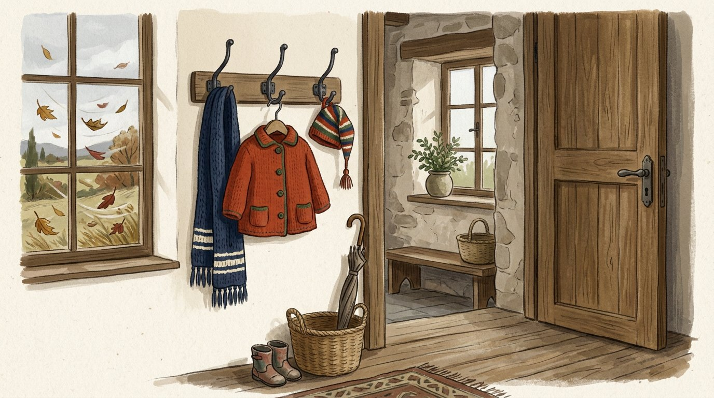
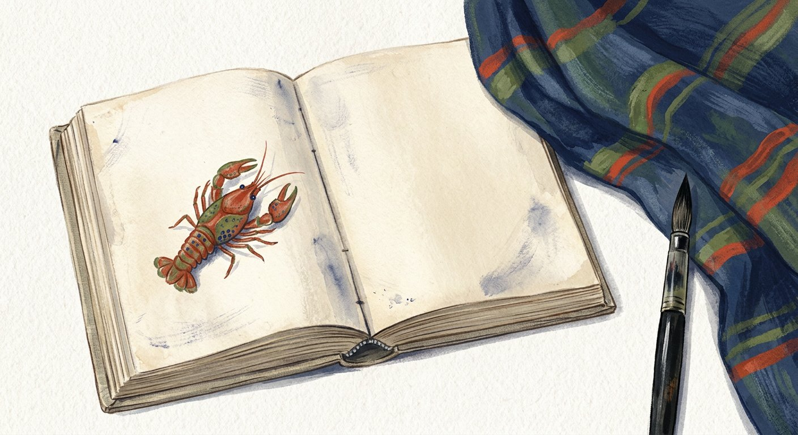
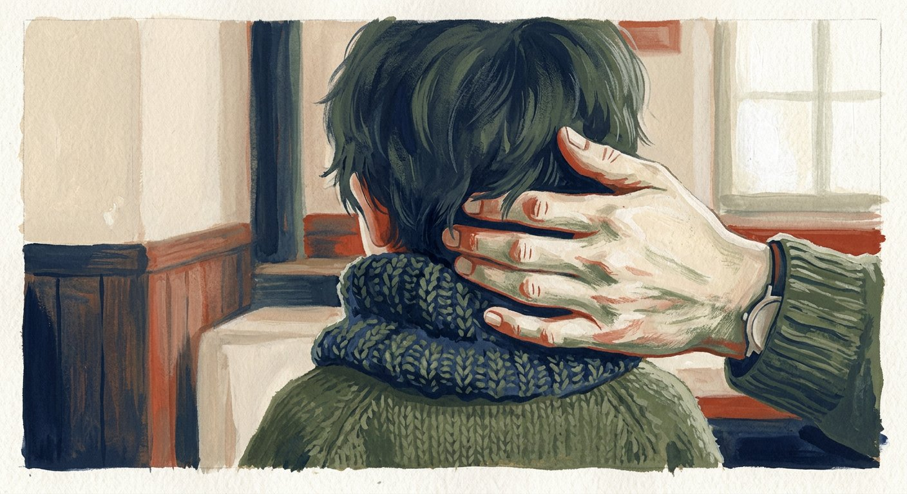
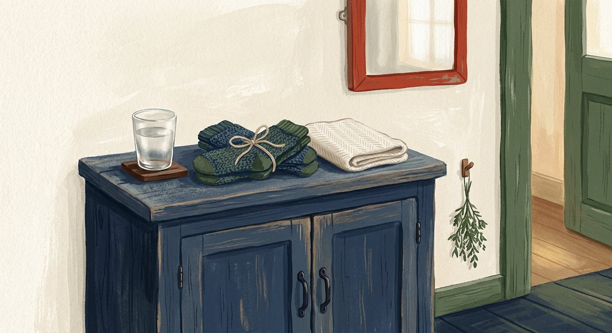

创作说明：本文由霓凰在 AI 辅助下创作，配图为 AI 生成。生活场景为综合改编。本文只讲生活养护常识，不替代医生的诊断与治疗。

🍂 风比节气先到
2026 年的立冬在 11 月 7 日，也就是后天，交节时刻是 17 点 52 分。可是这两天的风，已经抢在节气前头到了。早上霓凰送孩子到楼下，一阵风从楼缝里钻出来，孩子缩着脖子，把下巴埋进领口，说了一句：「妈妈，风钻进我衣服里了。」
这句话霓凰记了一路。回家她把冰箱上上周贴的便签翻出来，上面抄着《素问·四气调神大论》写冬天的那一段。这回她想找的是另一篇的另一句。
📜 八个字：避之有时
《素问·上古天真论》开篇不久，岐伯讲上古那些懂养生的人，是怎么教别人的：
「夫上古圣人之教下也，皆谓之虚邪贼风，避之有时，恬惔虚无，真气从之，精神内守，病安从来。」
大意是：上古的圣人教导百姓，对「虚邪贼风」，也就是异常的气候和外来的不利因素，要按时节躲开它；心里安静，不乱想，身体里的真气就顺畅，精神守在里头，病从哪里来呢？
霓凰盯着「避之有时」四个字看了一会儿。它没有说「不许吹风」，也没有说「裹成粽子」，说的是一个「时」字：该躲的时候躲，不该躲的时候，不用草木皆兵。放到今天，就是风大那几天，把脖子、肚子、脚踝三个地方照顾好，别的地方不必过度紧张。
灵宝趴在画册上，用触须点了点便签：「文气，这句真文气。」墨宝从砚台里探出半个脑袋：「我的壳厚，不怕风。」霓凰没理他俩，起身去翻孩子的衣柜。

🤲 出门前，摸后颈
很多家长看孩子冷不冷，习惯摸小手。霓凰以前也这样，摸到冰凉的手，赶紧再加一件。后来她听一位做儿科护士的朋友说，小孩的手本来就容易凉，摸手不太准，摸后颈更靠谱：后颈是暖的、不出汗，说明刚好；后颈摸上去潮乎乎，是穿多了；后颈发凉，才是真的冷。
她试了一个星期。早上出门前，手掌往孩子后颈上一贴，三秒钟。有两天后颈是湿的，她就把里头那件加绒的换成了薄的；有一天后颈凉凉的，她拿了条围巾，绕两圈，塞进领口。孩子嫌她手凉，缩着脖子笑，她也顺便给自己的手捂热了。
这个办法是生活里的经验，不是什么精密的诊断。孩子如果本身怕冷或者容易出汗，还是要看具体情况；睡觉时的穿盖，同样靠大人多摸多看。

🧣 三个地方，风最爱钻
霓凰家现在出门前多了三个检查点。
脖子：围巾不用多厚，能把领口那道缝挡住就行。孩子的围巾要绕得松一点，别勒着，跑跳时也别让一截垂在外面，免得被勾住。
肚子：上衣的下摆要塞好，或者选长一点的外套。坐着写作业时，衣服往上缩，露出一截腰，是很常见的。她给孩子准备了一件短款的薄马甲，里面穿，外面再套。
脚踝：这个最容易被忘。短袜配运动鞋，走起路来脚踝那一圈是露着的，风一吹就凉。她把家里的袜子换成了到脚踝上方一点的长度，睡前洗完脚，也先穿上袜子再上床。
这三处不用做到完美。哪天忘了，回来手脚冰凉，那就喝杯温水，坐一会儿，把袜子加上，没必要吓自己。
🏠 回家先换：出了汗的衣服别穿着
冬天另一个容易被忽略的事，是出汗。孩子课间追着跑，里头那层打底衫湿了，再被风一吹，凉意是从里往外冒的。
霓凰家现在有个小规矩：放学回到家，先把外套挂好，摸一摸孩子的后背；如果背上潮了，就先换件干的打底衫，再去吃点心写作业。动作很小，也就两分钟。
「恬惔虚无」那一句，她也看了好几遍。她的理解很朴素：在家里的时候，别跟孩子急。作业没写完，不顺心的事，晚饭前先放一放；一家人坐下来，吃一碗热汤，说说今天路上看到了什么。心里松一点，人也舒展一点。至于古人说的那个境界，她笑着说，自己大概做不到，她这个做妈妈的，连早上找不着孩子的另一只手套都会着急。

🩺 什么情况就别靠「养」了
如果孩子发烧、咳嗽加重、呼吸费力、精神明显不好，或者家里老人、慢性病患者症状有变化，请直接去看医生。摸后颈、加围巾、换干衣服，都是日子里的小功夫，帮不上的时候，别耽误时间。
✨ 三条虾生建议
第一条，明早出门前，手掌贴一下孩子的后颈，三秒钟，再决定加衣还是减衣。第二条，查一下家里的围巾和袜子，脖子、脚踝那两处各备一件。第三条，放学回家，先摸摸后背，潮了就换。
霓凰今天早上照做了。孩子站在玄关，仰着头让她摸后颈，她的手心贴上去，暖暖的，干干的。孩子问：「是不是刚刚好？」她点点头，把围巾的一头塞进他的领口，拍了拍他的肩，看着他背着书包走进楼道，风把门帘吹得晃了两下。
💌 霓凰 记于立冬前两天
资料来源
- 《黄帝内经·素问·上古天真论篇第一》：「夫上古圣人之教下也，皆谓之虚邪贼风，避之有时，恬惔虚无，真气从之，精神内守，病安从来。」（据维基文库、中国哲学书电子化计划 ctext.org 等版本核对，「惔」「淡」个别版本用字略有不同）
- 2026 年立冬：11 月 7 日 17 时 52 分（北京时间），据前文「霜降」「立冬前」篇所核对的香港天文台、紫金山天文台节气资料。
- 摸后颈判断冷热为家庭育儿的常见经验做法，作者听护士朋友所述，并非医学诊断标准；孩子或家人有基础疾病、发烧等情况请遵医嘱。